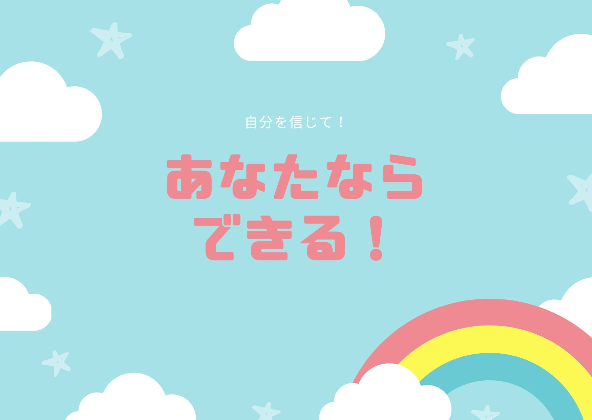

@@ -1,118 +0,0 @@
<!--PC向けスタイル-->
<style>
    /*背景の半透明機構*/
    .shadow{
        background-color: var(--background-body);
        width: 100vw;
        height: 100vh;
        overflow: hidden;
        z-index: 100;
        position: fixed;
        top:0;
        left: 0;
        display: none;
    }
    .menu-btn:checked ~ .shadow{
      display: block;
    }
    /*ヘッダーの作成*/
    .header {
      background: var(--dark-accent);
      position: fixed;
      top: 0;
      left: 0;
      width: 100%;
      height: 52px;
    }
    @keyframes slideshow {
      0%{
        margin-top: -52px;
      }
      100%{
        margin-top: 0;
      }
    }
    .header{
      animation: slideshow 1s ease-in-out;
    }
    .header > *:not(.shadow){
      z-index: 101;
    }

    /* 上のバー*/
    .navtext-container {
      width: 100%;
      height: 52px;
      position: absolute;
      box-sizing: border-box;
      display: flex;
      justify-content: center;
      align-items: center;
    }

    /* 上のバーの文字 */
    .navtext {
      position: relative;
      text-transform: uppercase;
      color: var(--right-accent);
      letter-spacing: 4px;
      font-size: 20px;
      color: white;
      padding-top: 5px;
      box-sizing: border-box;
    }
    .navtext{
      color:white;
    }
    nav {
      width: 100%;
      height: 70px;
      background-color: dimgray;
      padding-top: 5px;
      box-sizing: border-box;
    }
    ul {
      display: flex;
    }
    li {
      list-style: none;
    }
    a {
      display: block;
      text-decoration: none;
      margin-right: 35px;
    }
    nav {
      width: 100%;
      height: 70px;
      background-color: rgb(45, 51, 102);
    }
    center{
      margin: 10px auto;
    }
    .makespace{
      display: inline-block;
      margin-bottom: 20px 0 0 0;
    }
</style>
<!--ヘッダー本体-->
<header class="header">
  <center>
  <nav>
    <ul>
      <li><a href="#"></a><span class="makespace"></span></li>
      <li><a href="#"><span style="color: white;">top</span></a></li>
      <li><a href="#"><span style="color: white;">イベント</span></a></li>
      <li><a href="#"><span style="color: white;">企画</span></a></li>
      <li><a href="#"><span style="color: white;">マップ</span></a></li>
      <li><a href="#"><span style="color: white;">その他</span></a></li>
    </ul>
  </nav>
</header>
<script>
  var path = String(document.getElementById("anker").src).replace("script/initializer.js","");
  const atags = document.getElementsByTagName('a');
  for (let index = 0; index < atags.length; index++) {
    atags[index].href = path + atags[index].getAttribute('linkfor');    
  }
</script>